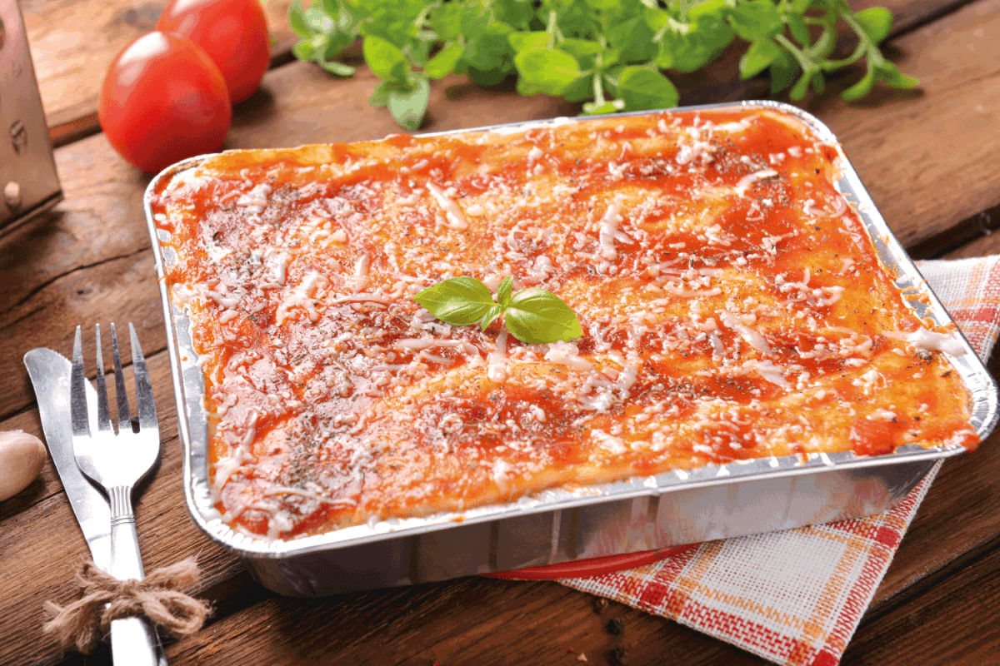

Lasagna

Description
Lasagna, America's pastime. Can be enjoyed for almost any occasion.
Be it for the Super Bowl, Thanksgiving, or New Years. This is sure to be a versatile dish.
Being both filling and nutritious, everyone will go home with full bellies.
Not only is this recipe versatile and satiating, but easy to make to boot.
Below will be a list of ingredients and how to make it.
Ingredients
- 9 lasagna noodles
- 1 tablespoon of olive oil
- 1 pound of ground beef
- 1 onion, diced
- Kosher salt and freshly ground black pepper, to taste
- 1 (28-ounce) can crushed tomatoes
- 1 tablespoon italian seasoning
- 1 (15-ounce) package whole milk ricotta
- 3 1/2 cups shredded mozzarella divided
- 1 large egg, beaten
- 1/4 cup freshly grated Parmesan
- 2 tablespoons chopped fresh parsley leaves
Steps
- Preheat oven to 350 degrees F. Lightly oil a 9×13 baking dish or coat with nonstick spray.
- In a large pot of boiling salted water, cook lasagna noodles according to package instructions.
- Heat olive oil in a large cast iron skillet over medium high heat. Add ground beef and onion and cook until beef has browned, about 3-5 minutes, making sure to crumble the beef as it cooks; season with salt and pepper, to taste. Drain excess fat. Stir in tomatoes and Italian seasoning until well combined.
- In a medium bowl, combine ricotta, 1/2 cup mozzarella and egg; set aside.
- Spread 1 cup tomato mixture onto the bottom of a 9×13 baking dish; top with 3 lasagna noodles, 1/2 of the ricotta cheese mixture and 1 cup mozzarella cheese. Repeat with a second layer. Top with remaining noodles, tomato mixture, 1 cup mozzarella cheese and Parmesan.*
- Place into oven and bake for 35-45 minutes, or until bubbling. Then broil for 2-3 minutes, or until top is browned in spots. Let cool 15 minutes.
- Serve, garnished with parsley, if desired.